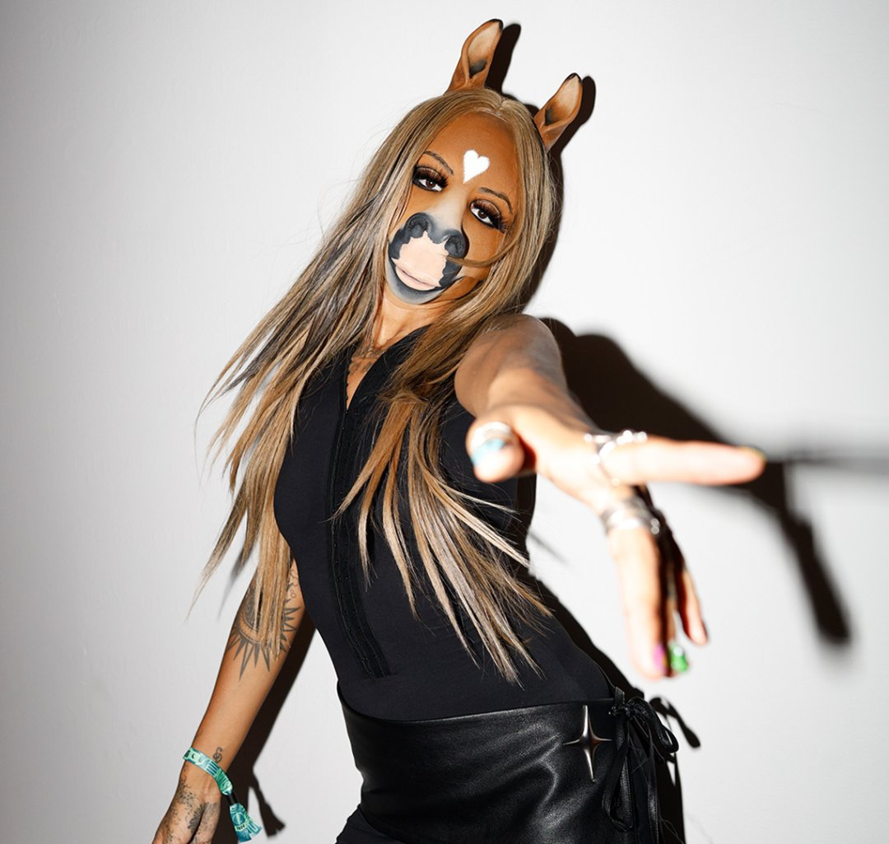

🌸¿Quién es Horsegiirl?💗🐴
⊹ ₊ ⁺‧₊˚ ♡(˶ˆᗜˆ˵) Horsegiirl es una artista experimental conocida por su personaje,
estética surrealista y bizarra y sobre todo por su enfoque único en la música techno y electrónica. Ella es mitad
caballo-mitad persona. Crea un universo donde a través de su música y videoclips divertidos su personaje vive varias
aventuras. Primero son sus inicios en el rancho, luego pasa a tener mucho éxito y viaja a la gran ciudad conociedo lo
que es el dinero, drogas y la fama. Al conocer lo que es la fama se le va de las manos y mata accidentalmente
a su marido, y está porsupuesto triste por ello. Su universo es muy divertido, y destaca por su imagen muy característica.
⊹ ₊ ⁺‧₊˚ ♡

✨Lo de hace destacar a Horsegiirl✨
ପ(๑•ᴗ•๑)ଓ ♡
- Su estética única y su apariencia híbrida.⊹ ₊ ⁺‧₊˚ ♡
- Su buena música evidentemente⊹ ₊ ⁺‧₊˚ ♡
- Mezcla la fantasía (tema recurrente) con cultura de internet⊹ ₊ ⁺‧₊˚ ♡
🌸Datos curiosos☝️🤓
- Su música se podría categorizar como Hyperpop, techno y electrónica
- Es una Dj alemana, concretamente proviene de Berlín
- Su nombre es Stella Stallion y se identifica como midat caballo mitad mujer.
- Empezó en 2022 con su primer album Farm Fantasies.
- Ha pinchado en múchas lugares y partes del múndo. Pero destacan el Boiler Room y el festival Coachella.
- En el Coachella conoció a la hija de Kim Kardashian, North West.
Definiciones💤💤
- Hyperpop
- Género musical que proviend de la electrónica experimental. Surgió a principios de la década 2010 en Reino Unido.
Caracterizado por una interpretación exagerada y maximalissta del pop y otros géneros.
- Boiler Room
- Una plataforma en línea que comisiona y retransmite sesiones de música en vivo de DJs de todo el mundo.
¿Quieres recibir información sobre conciertos? 🎤🌸
Rellena este formulario y te avisaremos de futuros eventos de Horsegiirl ✨
Volver arriba